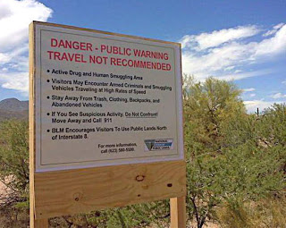

 |
| La Reconquista? BLM travel advisory in AZ. |

(See corrections and clarifications below, 7/12)
(Updated below, 7/10)
Which is the more serious threat to life, liberty and property: The illicit violence practiced by a handful of furtive armed drug smugglers in the Arizona desert, or the increasingly brazen militarization of U.S. law enforcement in the "war on drugs"?
According to some hyperventilating commentators, drug smugglers -- with the guilty acquiescence of Barack Obama -- have seized control of a huge swath of Arizona, thereby asserting alien sovereignty over what was once American soil. If this were true, points out libertarian journalist (and Arizona resident) J.D. Tuccille, the Narcotics lords would preside over a kingdom "populated by rattlesnakes and cholla."
What has actually happened is a minor but politically exploitable increase in criminal activity in one of the many drug smuggling corridors that have long existed in the southwest, channels of illicit commerce created in order to serve a huge market that persists despite decades of prohibition.
What has actually happened is a minor but politically exploitable increase in criminal activity in one of the many drug smuggling corridors that have long existed in the southwest, channels of illicit commerce created in order to serve a huge market that persists despite decades of prohibition.
While Mexican bandits supposedly exercise dominion over reptiles and cacti, National Guard units throughout the country are actively involved in transforming nominally civilian law enforcement agencies into a full-blown domestic army of occupation. Last year, according to Albany, New York Fox affiliate WXXA, the New York State National Guard "assisted in more than 2,000 arrests ... and had almost $150 million in drug, property and weapon seizures."
While they do engage in the occasional isolated shoot-out, the drug gangs supposedly controlling a section of Arizona aren't terrorizing innocent families in late-night or early-morning armed raids. Nor are they detaining -- and sometimes killing -- motorists at checkpoints. They're not plundering people in roadside shakedowns. Criminal violence of that kind is carried out every day by police -- often with hands-on military assistance -- as part of the "war on drugs."
While they do engage in the occasional isolated shoot-out, the drug gangs supposedly controlling a section of Arizona aren't terrorizing innocent families in late-night or early-morning armed raids. Nor are they detaining -- and sometimes killing -- motorists at checkpoints. They're not plundering people in roadside shakedowns. Criminal violence of that kind is carried out every day by police -- often with hands-on military assistance -- as part of the "war on drugs."
According to Col. Alden Saddlemire of the New York National Guard, the martial language used to describe this domestic campaign is literal, not metaphorical. "The war on drugs is an ongoing war," Saddlemire told WXXA. "It's a domestic fight [we] firmly believe in."
 | |||
| Occupying Army: No, these guys aren't Mexican narco-terrorists. |
Prohibition always results in the criminalization of markets. Thus it's hardly surprising that America's vast market for prohibited mood-altering substances is being served by violent and ruthless people.
That violence, however, is mostly self-contained. The same cannot be said for the violence -- both implicit and overt -- carried out in the name of drug enforcement, which in practical terms is little more than a price support program for the narcotics cartels.
According to official propaganda, the National Guard Counterdrug Program (NGCDP) "operates in all 54 states and territories to support local, state, and federal law enforcement agencies..... [The program] currently operates 125 OH-58 Kiowa helicopters to support federal, state and local Law Enforcement Agencies' demand for aviation support in Counterdrug operations."
Guard pilots and support personnel are actively involved in "area surveillance and reconnaissance; vehicle/fugitive surveillance and tracking, cover/force protection during RAID/Sweeps" and cannabis eradication operations.
One must hack through a dense thicket of acronyms in order to uncover what's really happening here. The NGCDP -- that's National Guard Counterdrug Program -- "recently realigned CD RAID Detachments into Security and Support Battalions," the mystified reader is told without being informed that "CD RAID" refers to Counter-Drug Recon and Aerial Interdiction Detachments.
 |
| We're not in Mayberry anymore. |
We then learn that although "mission focus" remains on "LEA support to CD operations" -- that is, assisting Law Enforcement Agencies carry out Counter-Drug programs -- "HLS/HLD missions will take on a larger role than before." That singularly opaque clause refers to Homeland Security/Homeland Defense operations.
Deprived of semantic camouflage this is an admission that the escalation of the military's role in the "war on drugs" will segue into larger, and increasingly overt, domestic military role in "homeland security."
The NGCDP is eager to dispense all kinds of military hardware -- complete with "technical support" personnel -- on any "civilian" law enforcement agency that puts in a request.
You want night vision goggles? Forward-Looking Infrared gear (which was used to such dramatic effect in the murderous final assault on the Branch Davidians)? Thermal imagers, surveillance aircraft, mobile gamma-ray automobile inspection units? Just give the National Guard a holler, and they'll be happy to help.
Sure, this means some swivel-hipping around that pesky Posse Comitatus Act, but it's pretty much a dead letter anyway.
Once the Guard is seamlessly integrated into the domestic counter-drug effort, they'll be ready to carry out whatever other homeland security missions that arise: mass arrests of protesters and perfectly harmless civilians during political conventions, confiscation of firearms during disasters or other emergencies, or even -- as Gen. George S. Patton once recommended -- the use of total war tactics (summary mass detentions, summary executions of conspicuous troublemakers, the use of toxic gas and white phosphorous munitions) against organized dissident groups.
All of this has been done already, on a limited scale and in specific circumstances. Because of the "war on drugs" and the "war on terror," the infrastructure is now in place to institutionalize those once-exceptional abuses, if -- make that "when" -- our self-appointed rulers choose to do so.
Some who are properly alarmed over all of this have invested their hopes in Sheriff Richard Mack's campaign to educate and mobilize county sheriffs to resist federal usurpation of state and local authority. Sheriff Mack is an admirable man, and his campaign is worthwhile -- but too many sheriffs have already been bought off by the Feds.
One example among many is Sheriff Tom Bosenko of California's Shasta County, who allocated $340,000 to create a special marijuana suppression unitlargesse.
You want night vision goggles? Forward-Looking Infrared gear (which was used to such dramatic effect in the murderous final assault on the Branch Davidians)? Thermal imagers, surveillance aircraft, mobile gamma-ray automobile inspection units? Just give the National Guard a holler, and they'll be happy to help.
| Wish list: A National Guard menu for police militarization. |

Once the Guard is seamlessly integrated into the domestic counter-drug effort, they'll be ready to carry out whatever other homeland security missions that arise: mass arrests of protesters and perfectly harmless civilians during political conventions, confiscation of firearms during disasters or other emergencies, or even -- as Gen. George S. Patton once recommended -- the use of total war tactics (summary mass detentions, summary executions of conspicuous troublemakers, the use of toxic gas and white phosphorous munitions) against organized dissident groups.
All of this has been done already, on a limited scale and in specific circumstances. Because of the "war on drugs" and the "war on terror," the infrastructure is now in place to institutionalize those once-exceptional abuses, if -- make that "when" -- our self-appointed rulers choose to do so.
Some who are properly alarmed over all of this have invested their hopes in Sheriff Richard Mack's campaign to educate and mobilize county sheriffs to resist federal usurpation of state and local authority. Sheriff Mack is an admirable man, and his campaign is worthwhile -- but too many sheriffs have already been bought off by the Feds.
One example among many is Sheriff Tom Bosenko of California's Shasta County, who allocated $340,000 to create a special marijuana suppression unitlargesse.
Paul Babeu, the Sheriff of Arizona's Pinal County, has pioneered a new approach to federalizing local law enforcement: He has actually invited the Feds to occupy Arizona on the pretext of defending the state from the illegal immigrant "invasion."
“It’s literally out of control,” Babeu insisted in an interview with Fox News. “We stood with Senator McCain and literally demanded support for 3,000 soldiers to be deployed to Arizona to get this under control and finally secure our border with Mexico."
Sheriff Babeu -- a PR-fixated political ally of arch-neocon John McCain -- is consciously carving out a media-friendly persona as the heir to Maricopa County Sheriff Joe Arpaio. It was Babeu who induced a paroxysm of populist outrage by declaring that the Obama administration had effectively surrendered a swath of Arizona to Mexico.
Pinal County -- Sheriff Babeu's jurisdiction -- is well inside the border with Mexico. Pima County, which actually shares a border with Mexico, is the responsibility of
Sheriff Clarence Dupnik, who also takes a hard line on immigration enforcement but doesn't share Babeu's siege mentality or appetite for media attention.
Sheriff Dupnik is one of several Arizona law enforcement veterans who believe that the problems associated with illegal immigration are being inflated into a politically useful "crisis."
Sheriff Dupnik is one of several Arizona law enforcement veterans who believe that the problems associated with illegal immigration are being inflated into a politically useful "crisis."
Retired Mesa police officer Bill Richardson, who worked in counter-narcotics task forces in several Arizona counties, believes that Babeu -- like Arpaio and Arizona state senator Russell Pearce (chief sponsor of SB 1070) -- is "fanning the flames of fear, that the undocumented are the root cause of crime in Arizona. In fact, they are not."

Whether or not this assessment is accurate, both immigration (legal and illegal) and violent crime have been steadily decreasing in Arizona over the past decade -- a period encompassing Babeu's entire law enforcement career.
Richardson, a long-time Arizona resident with decades of law enforcement experience, points out that Babeu -- who relocated to Arizona after losing a mayoral race in North Adams, Massachusetts in 2001 -- was a police officer in Chandler for just 5 1/2 years (during which time he served as head of the local police union) before being elected Pima County Sheriff.
Richardson, a long-time Arizona resident with decades of law enforcement experience, points out that Babeu -- who relocated to Arizona after losing a mayoral race in North Adams, Massachusetts in 2001 -- was a police officer in Chandler for just 5 1/2 years (during which time he served as head of the local police union) before being elected Pima County Sheriff.
Two of those years were spent in National Guard deployments -- one of them in Iraq, the other on the southern border as part of a joint effort with the Border Patrol called "Operation Jump Start."
Babeu, who enlisted at 21 and currently holds the rank of Major in the National Guard, often campaigned in uniform as a perennial Republican political candidate in Massachusetts. He was successful once, winning a spot on the Berkshire County Commission and a leadership role in the County GOP.
After three unsuccessful bids for higher office, Babeu followed his parents (long-time Republican activists themselves) to Arizona, which had a more congenial political climate. (Joe Arpaio, interestingly, is likewise a transplanted Massachusetts native.)
Babeu, who refers to McCain as his "hero," is hard-wired into the neo-con-dominated Republican media apparatus, and he clearly has aspirations above and beyond his current position.
Just as importantly, 41-year-old Babeu -- who is both a county sheriff and a National Guard major -- literally embodies the ongoing merger of the military and law enforcement. He is the fons et origo of the notion that Obama, in an act of high treason, surrendered sacred American soil to Mexican drug gangs -- which isn't strictly true, of course, but is irresistibly potent to political opportunists.
Just as importantly, 41-year-old Babeu -- who is both a county sheriff and a National Guard major -- literally embodies the ongoing merger of the military and law enforcement. He is the fons et origo of the notion that Obama, in an act of high treason, surrendered sacred American soil to Mexican drug gangs -- which isn't strictly true, of course, but is irresistibly potent to political opportunists.
Immigration, Babeu insists, "is the number one issue that faces Arizona." This could be considered the truth in the sense that it is the most useful issue for candidates looking to build a political career, and opportunistic incumbents -- including Senator McCain, who once supported amnesty for illegal immigrants but has re-cast himself as a flint-eyed border guardian in his ongoing re-election campaign.
As the current issue of Harper's magazine documents, the most serious problems besetting Arizona have little if anything to do with immigration, and everything to do with the most recent Federal Reserve-engineered depression.
As the current issue of Harper's magazine documents, the most serious problems besetting Arizona have little if anything to do with immigration, and everything to do with the most recent Federal Reserve-engineered depression.
J.D. Tuccille points out that concern over immigration is most pronounced in Phoenix, rather than in the southern part of the state. Phoenix somehow survived the immigrant onslaught, but it may be doomed as a result of the collapse of the housing bubble.
Ken Silverstein of Harper's points out that 61.5 percent of all Phoenix mortgages are "underwater," and unemployment is probably running at about 18 percent or higher. The latter figure can't be explained as a case of immigrants "stealing" jobs from natives, since the housing implosion led to a dramatic contraction of the immigrant labor pool.
Forty-five minutes southwest of Phoenix there's a town called Maricopa that didn't exist ten years ago: It was created at the height of the Fed-induced housing frenzy. It's entirely possible that Maricopa won't exist a decade from now: It was a town built entirely on fraud.
"They weren't building homes," explains the consistently quotable Jay Butler, an associate professor of real estate at Arizona State University. "They were building mortgages that they could put into mortgage-backed securities in order to sell them to investors in China and France." Amid a pervasive atmosphere of moral hazard, mortgage loans were extended to practically anybody with a pulse and the ability sign the necessary documents. The results were utterly predictable.
Four years ago in Maricopa, speculators were buying whole tracts of houses and builders were demanding a 12-hour turnaround on building permits in order to meet existing demand. Today, that future ghost town registers a "distress index" (percentage of home sales involving bank-owned or pre-foreclosure properties) of 76.8 percent.
"They weren't building homes," explains the consistently quotable Jay Butler, an associate professor of real estate at Arizona State University. "They were building mortgages that they could put into mortgage-backed securities in order to sell them to investors in China and France." Amid a pervasive atmosphere of moral hazard, mortgage loans were extended to practically anybody with a pulse and the ability sign the necessary documents. The results were utterly predictable.
Four years ago in Maricopa, speculators were buying whole tracts of houses and builders were demanding a 12-hour turnaround on building permits in order to meet existing demand. Today, that future ghost town registers a "distress index" (percentage of home sales involving bank-owned or pre-foreclosure properties) of 76.8 percent.
"In a neighborhood called Maricopa Meadows," writes Ken Silverstein, "we rolled past a block of McMansions, all but a handful of which had gone into foreclosure." Silverstein's guide observed: "You've got people doubling up in houses so they can split utilities.... The story is the same from here to Queen Creek to Buckeye, in all these places that people scattered before the crash."
As the New York Times recently reported, the real estate industry in Arizona is now essentially a subsidiary of Fannie Mae and Freddie Mac (which are in de facto default, sitting on more than $4 trillion worth of bad debts.)
When the Fed's bubble was expanding, Realtors sold homes to unqualified buyers at grotesquely inflated price. Now that the bubble has burst, Realtors in are doing a similarly brisk business in repossessions. Given the dim prospects for an economic rebound, it's profoundly doubtful that many of those homes will ever be re-sold. And the coming commercial real estate crash will be at least as devastating for Arizona, a "branch office" state with little local industry apart from agriculture.
When the Fed's bubble was expanding, Realtors sold homes to unqualified buyers at grotesquely inflated price. Now that the bubble has burst, Realtors in are doing a similarly brisk business in repossessions. Given the dim prospects for an economic rebound, it's profoundly doubtful that many of those homes will ever be re-sold. And the coming commercial real estate crash will be at least as devastating for Arizona, a "branch office" state with little local industry apart from agriculture.
As her state descends into economic ruin, Governor Jan Brewer -- hailed by Republican conservatives nation-wide as a heroine for signing SB 1070 -- is working diligently to impose a drastic sales tax increase on the state. Borrowing a familiar leftist trope, Brewer has claimed that people will "die" unless the regressive tax increase is enacted in the midst of a deepening economic contraction.
As Governor, Brewer (who, like Babeu, is allied with McCain) has done nothing to reduce the size and expense of the state government. The timely and welcome distraction provided by the controversy over SB 1070, notes Barbara Hollingsworth of the Washington Examiner, saved Brewer "from a nasty primary challenge" arising from her $3 billion sales tax increase.
Now, however, some opinion polls place her just five points behind President Obama in a hypothetical 2012 match-up -- solely on the strength of her perceived role as a proponent of "secure borders."
Brewer's reputation was enhanced by an open letter to Obama in which Brewer demanded a "border surge" involving at least 6,000 troops. And it wasn't noticeably injured when she made the risible claim that the "majority" of illegal immigrants are working as "mules" in the employ of drug cartels -- a claim immediately and decisively shot down by T.J. Bonner of the National Border Patrol Council.
Displaying gallantry through heroic understatement, Bonner said that Brewer's demented claim "doesn't comport with reality." This isn't surprising, given that Brewer and her allies aren't in the reality business. Like narcotics pushers, they're in the business of promoting altered states of consciousness for profit -- such as the perception that Arizona is about to be devoured in a Mexican anschluss.
Brewer persisted in her reality-aversive treatment of the immigration issue by repeatedly making the horrifying and entirely unsubstantiated claim that illegal immigrants had committed "beheadings" in Arizona.
"We cannot afford all this illegal immigration and everything that comes with it, everything from the crime and to the drugs and the kidnappings and the extortion and the beheadings," stated Brewer in an interview with Fox News. While it's true that some drug-related murders in Mexico have involved beheading, there's not been a single documented case of that kind in Arizona. This didn't deter Brewer from reiterating that claim -- citing unspecified "law enforcement agencies" as sources -- in a subsequent interview.
Following up on those interviews, the Arizona Guardian reported that six county medical examiners, including four from border counties, "say they have never heard of such attacks." Which is to say that this is another terrifying claim that doesn't "comport with reality."It is, however, extremely useful for Brewer's brand of what Mencken described as "practical politics" -- "keep[ing] the populace alarmed (and hence clamorous to be led to safety) by menacing it with an endless series of hobgoblins, all of them imaginary."
If Brewer and her allies were interested in reality-based solutions to narcotics-related violent crime, Brewer and her ilk would agitate for the repeal of drug prohibition and an end to the subsidies and military aid to Mexico that are fueling the narcotics wars in that country. Instead, they're doing their considerable best to keep their constituents hopelessly addicted to the domestic warfare state.
(Note: This essay is an expanded version of the original.)
Comments, Corrections, and Clarifications, 7/12
"As a resident of Arizona for more than forty years, I assure you that Maricopa did exist more than ten years ago, as did many other small `intersection communities' on the outskirts of the Phoenix Metro area that became developers and mortgage brokers havens," writes an accomplished and well-informed reader from Arizona. "`No industries other than agriculture'? I guess that you are not keeping up with the role of copper in the world marketplace. Arizona is the largest source of copper in the western world. Not to mention the thriving aerospace and electronics, banking and IT industries in the state.... Arizona is [also] in the lead exporting not only copper, but also cotton, alfalfa, beef, and computer chips."
"Errors on such basic facts are not acceptable for someone in your position," he concludes. "It does not change the basic correctness of your thesis, but certainly causes one to pause and consider how deeply familiar you actually are with Arizona as it really is...."
I appreciate the corrections, especially with regard to Arizona's copper industry, which was a significant oversight on my part. My intent in describing Arizona as a "branch office" state was not to deny or minimize the current role of IT and other tech-related employers, but rather to underscore the vulnerability of the state to a commercial real estate collapse in the likely event that out-of-state firms are forced to cut back as a result of the ongoing worldwide contraction. And, for what it's worth, I don't regard "banking" as a viable industry, for reasons made vivid in the rapid expansion, and even more rapid catastrophic collapse, of Maricopa.
Responding to my observation that "the drug gangs supposedly controlling a section of Arizona aren't terrorizing innocent families in late-night or early-morning armed raids.... [n]or are they detaining -- and sometimes killing -- motorists at checkpoints.... [or] plundering people in roadside shakedowns," another reader (who didn't specify his place of residence) contends: "Well, yes, as a matter of fact they are. This fact in no way lessens the hideous increase in the growth of the police state, but you shouldn't misrepresent the border crime problem."
Now, however, some opinion polls place her just five points behind President Obama in a hypothetical 2012 match-up -- solely on the strength of her perceived role as a proponent of "secure borders."
Brewer's reputation was enhanced by an open letter to Obama in which Brewer demanded a "border surge" involving at least 6,000 troops. And it wasn't noticeably injured when she made the risible claim that the "majority" of illegal immigrants are working as "mules" in the employ of drug cartels -- a claim immediately and decisively shot down by T.J. Bonner of the National Border Patrol Council.
Displaying gallantry through heroic understatement, Bonner said that Brewer's demented claim "doesn't comport with reality." This isn't surprising, given that Brewer and her allies aren't in the reality business. Like narcotics pushers, they're in the business of promoting altered states of consciousness for profit -- such as the perception that Arizona is about to be devoured in a Mexican anschluss.
Brewer persisted in her reality-aversive treatment of the immigration issue by repeatedly making the horrifying and entirely unsubstantiated claim that illegal immigrants had committed "beheadings" in Arizona.
"We cannot afford all this illegal immigration and everything that comes with it, everything from the crime and to the drugs and the kidnappings and the extortion and the beheadings," stated Brewer in an interview with Fox News. While it's true that some drug-related murders in Mexico have involved beheading, there's not been a single documented case of that kind in Arizona. This didn't deter Brewer from reiterating that claim -- citing unspecified "law enforcement agencies" as sources -- in a subsequent interview.
If Brewer and her allies were interested in reality-based solutions to narcotics-related violent crime, Brewer and her ilk would agitate for the repeal of drug prohibition and an end to the subsidies and military aid to Mexico that are fueling the narcotics wars in that country. Instead, they're doing their considerable best to keep their constituents hopelessly addicted to the domestic warfare state.
(Note: This essay is an expanded version of the original.)
Comments, Corrections, and Clarifications, 7/12
"As a resident of Arizona for more than forty years, I assure you that Maricopa did exist more than ten years ago, as did many other small `intersection communities' on the outskirts of the Phoenix Metro area that became developers and mortgage brokers havens," writes an accomplished and well-informed reader from Arizona. "`No industries other than agriculture'? I guess that you are not keeping up with the role of copper in the world marketplace. Arizona is the largest source of copper in the western world. Not to mention the thriving aerospace and electronics, banking and IT industries in the state.... Arizona is [also] in the lead exporting not only copper, but also cotton, alfalfa, beef, and computer chips."
"Errors on such basic facts are not acceptable for someone in your position," he concludes. "It does not change the basic correctness of your thesis, but certainly causes one to pause and consider how deeply familiar you actually are with Arizona as it really is...."
I appreciate the corrections, especially with regard to Arizona's copper industry, which was a significant oversight on my part. My intent in describing Arizona as a "branch office" state was not to deny or minimize the current role of IT and other tech-related employers, but rather to underscore the vulnerability of the state to a commercial real estate collapse in the likely event that out-of-state firms are forced to cut back as a result of the ongoing worldwide contraction. And, for what it's worth, I don't regard "banking" as a viable industry, for reasons made vivid in the rapid expansion, and even more rapid catastrophic collapse, of Maricopa.
Responding to my observation that "the drug gangs supposedly controlling a section of Arizona aren't terrorizing innocent families in late-night or early-morning armed raids.... [n]or are they detaining -- and sometimes killing -- motorists at checkpoints.... [or] plundering people in roadside shakedowns," another reader (who didn't specify his place of residence) contends: "Well, yes, as a matter of fact they are. This fact in no way lessens the hideous increase in the growth of the police state, but you shouldn't misrepresent the border crime problem."
I've consistently acknowledged the serious problem of violent crime at the U.S.-Mexico border, which I believe is largely driven by the politics of domestic prohibition and Washington's insane subsidy of Mexico's narco-state. Ending those policies, in my view, would help mitigate the problem of violence at the border. It probably wouldn't solve it outright, but problems rooted in human depravity aren't amenable to political solutions.
UPDATE: A Daring Drive through "Re-conquered" Arizona
Boldly risking certain death by decapitation at the hands of ubiquitous Mexican drug smugglers, "Real News Tucson" drives through the section of southern Arizona supposedly ceded to Mexico. Oddly enough, the only trouble they encounter comes at a Border Patrol checkpoint two dozen miles inside the border, where they are definitively told by a BP agent that the notion part of Arizona has been surrendered to Mexican control -- and are therefore inaccessible to Americans -- is "false information."
Your donations are vital to keep Pro Libertate up and running. Thank you so much!

Catch Pro Libertate Radio each Saturday evening from 8:00-11:00 Mountain Time on the Liberty News Radio Network.
Dum spiro, pugno!
17 comments:
Bravo, bravo, BRAVO, Will!
I cannot thank you enough for exposing the unmitigated disaster that is Arizona, a state that ranks down at the bottom with Mississippi and Louisiana on the "hope" index. Sadly, the picture that you paint is actually even grimmer than you describe, for none but a tiny minority in this state (one that I'm proud to be a member of) can even conceive of Arizona being anything other than a combination of saharan nursing home that relies on the bankrupt social security system and a giant open-air subsidiary of the prison-industrial-police-state complex. Even if the political will and wisdom existed to slash the size of the state government and repeal the onerous taxes and regulation that are strangling anyone with entrepreneurial aspirations and to foster economic growth (most of which is in the "underground" economy of goods and services offered by "illegal aliens" the redneckleptoplutocratic ruling classes are targeting) through benign neglect, the state's demographics work against it.
In addition to having a geriatric majority, Arizona, as I've mentioned here and elsewhere, is plagued with a school system that has been ranked third worst in the nation for the last decade, each year turning out thousands of high school "graduates" unable to fill out a simple job application or make proper change for a five-dollar bill (this is NOT an exaggeration - come visit me in Tucson sometime and accompany me to the local convenience store or fast food joint to see for yourself). Also, the percentage of the adult population, particularly in the Phoenix-Tucson corridor and the surrounding counties (including Pinal) that is incapacitated by chronic substance abuse is astronomical compared to other economically-developed parts of the nation. This precludes most from ever becoming part of a pool of skilled, educated, dependable labor that is essential for any genuine economic development or recovery. Thus I believe that it is no accident that state-corporate parasites like Wackenhut Security so eagerly recruit here, given the massive pool of uneducated and otherwise unemployable creatures who have no other options but to starve or go on the rapidly vanishing dole.
(End Part I)
Will, my response is too large to post here, so I've posted it as the latest entry of my own blog (no shameless plug intended).
In a nutshell, you've nailed it, as usual. Only I fear it's worse than you describe.
Liberranter
Like Dantes Inferno the sign as you enter the US should be "abandon all hope ye who enter here."
Who with any sanity would want to immigrate here.
Ending prohibition is never considered as an option while more force and harsher penalties continue to be offered and accepted as solutions. After more than forty years of buying into the escalating idiocy ("murderous fraud") one begins to wonder if the majority of Americans have become senile fools. Perhaps if they read something other than the sports page it might activate just a few normally inert brain cells and yield a small amount of enlightenment but miracles are few and far between these days.
Goodbye Posse Comitatus. It was nice to have known you.
Nativism - alive and well in Amerika. What better way to appeal to the most base elements of the electorate - particularly when they are at their most vulnerable point- unemployed and barely able to make ends meet. Sounds like Germany right after the collapse of the Weimar Republic. Makes one just want to bug out.
Paul Babue is not the Sheriff of Pima county, Clearance Dupnik is, and has been as long as I can remember. Babue is Sheriff of Pinal county, which encompasses huge retirement communities just north of Tucson and in Casa Grande. His county lies between Pima and Maricopa counties, which makes him north of Tucson, and south of Phoenix. So, his jurisdiction is not actually on the border. Pima County borders Mexico, Pinal County does not.
nice video at the end - the debunking of the myth of the "brown invasion" was nice - the cute girl was also nice.
"Brewer and her allies aren't in the reality business. Like narcotics pushers, they're in the business of promoting altered states of consciousness for profit..."
What a line! Nails it all so succinctly. The people are zonked on propaganda. They cannot reason, and they have no desire to reason. The proposition of more war is like taking another hit. Frightening.
If the majority of Americans or voters fit this description and we are mirroring the life of a real addict, then without an intervention, we must wait to hit bottom. Either way, this is not going to be pleasant.
I don't hold out much hope. As another commenter said above, "Who with any sanity would want to immigrate here.[?]"
Will, have you read about this one.....CHL holder, West Point graduate, Duke MBA, killed by police outside of Costco? Witness accounts differ from police accounts. Seems like maybe he was given contradictory instructions and gunned down when he tried to comply with the wrong one:
http://www.lasvegassun.com/news/2010/ju ... in-costco/
http://www.lasvegassun.com/news/2010/ju ... un-permit/
http://www.8newsnow.com/Global/story.asp?S=12793800
http://www.lvrj.com/news/slaying-of-arm ... 23884.html
http://www.texaschlforum.com/viewtopic.php?f=26&t=36107
I wonder how this country will eventually break up? Like Yugoslavia? I have some solutions to the problems with illegal immigration: Ending drug prohibition and doing away over time to the welfare state.
Is Arizona going to wind up as America's Bosnia?
Will,
Thanks for your tireless campaign for liberty and thinking outside the box.
Great article.
El Chupacabras
I have some solutions to the problems with illegal immigration: Ending drug prohibition and doing away over time to the welfare state.
That's really all it would take. Of course, that would also take power away from the State, and we can't have THAT, now can we?
Granted, the US welfare state, War on Drugs, and immigration laws are all bad things and have contributed to the situation on the border.
Nevertheless, I believe it's ridiculous to allow an armed incursion to continue on US soil -- and it certainly shows that supporters of a "warfare state" are NOT getting their way in US politics right now.
Why? Because America has faced the problem of invasions by Mexican gangs before, and dealt with them successfully. And the method we used then is one both I and the warfare-statists would try again now. See:
https://secure.wikimedia.org/wikipedia/en/wiki/Pancho_Villa_Expedition
Good article. I think it is also possible that the US government wishes to create a public paranoia about Mexico and Mexicans. Mexico is once again talking about remonetizing silver. There is a lot of support for it within the Mexican government and amongst its citizens. The US has stirred up trouble in other countries to protect US financial hegemony in the past.
http://worldcomplex.blogspot.com/2010/07/mexico-silver-and-worlds-greatest-narco.html
The London-based Syrian Observatory for [url=http://www.girlsbushes.com/hairy019/bushabu.html][color=#000000]Human[/color][/url] Rights said four people were killed when security forces opened fire on protesters in the northeastern city of Deir Ezzor, as demonstrators gathered in the city's Freedom Square.
The group, citing an account from a [url=http://www.extreme-weird-objects.com/objects/aplant2.html][color=#000000]doctor[/color][/url] in the city, said 10 people were also wounded, some of them critically.
The state-run Syrian Arab News Agency published a report saying that "veiled armed [url=http://www.pantieupskirt.com/x/hm/pix.htm][color=#000000]groups[/color] [/url] on Thursday tried to put up barriers on roads in Deir Ezzor province."
"The armed groups also [url=http://www.rawsexthrills.com/fat/a04b/1c.htm][color=#000000]forced[/color][/url] shop owners to close their shops in the city, terrified families, threatened citizens and destroyed some stores whose owners refused to respond to their demands."
Post a Comment